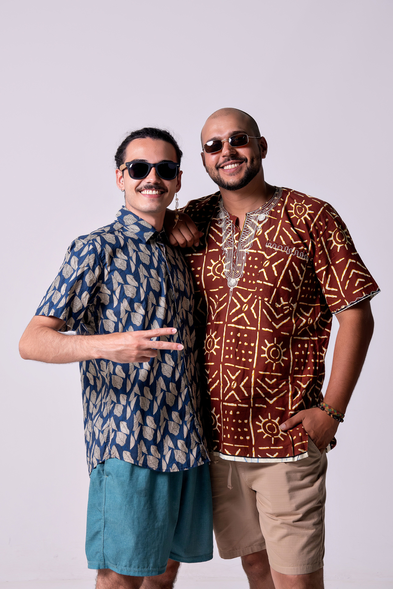
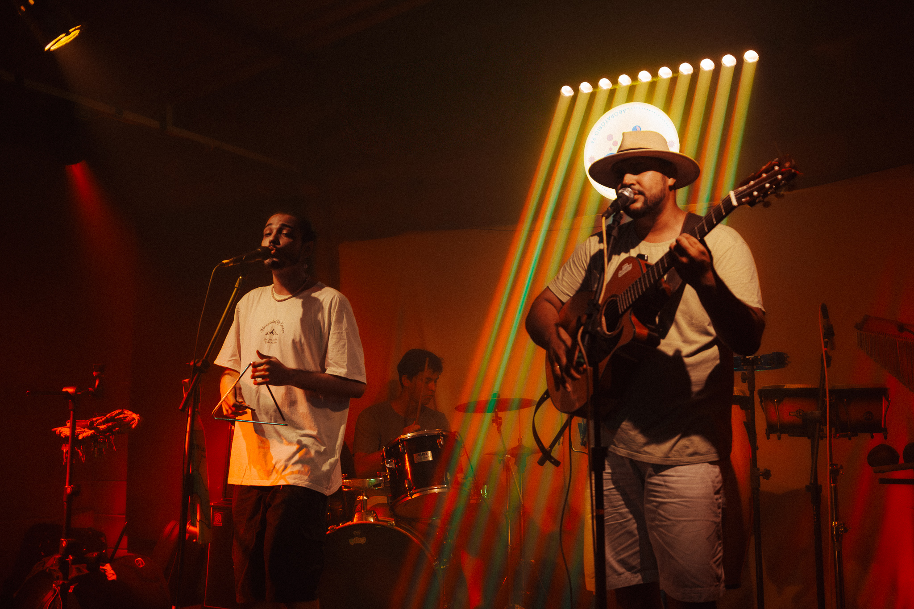
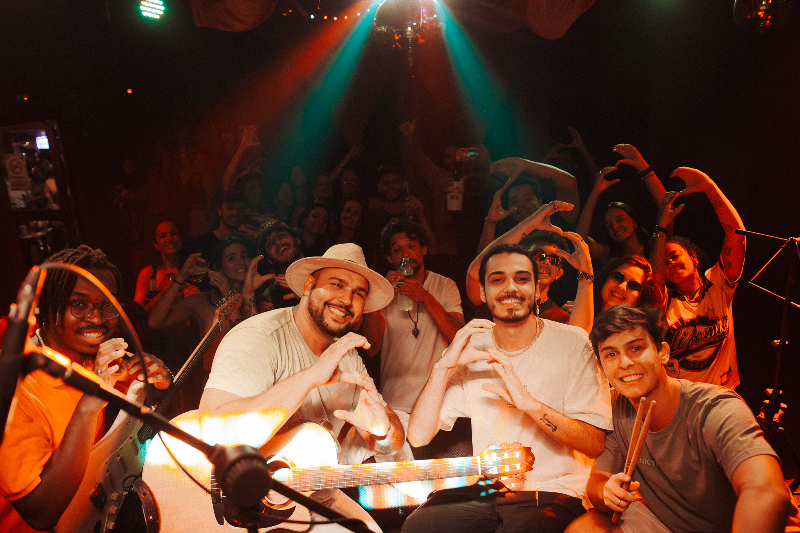
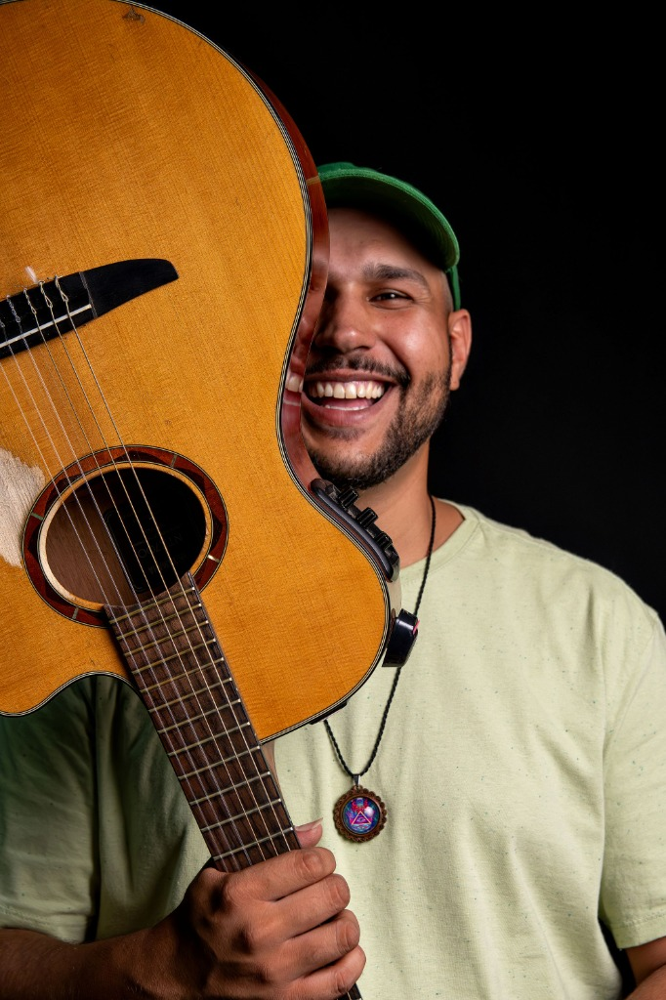
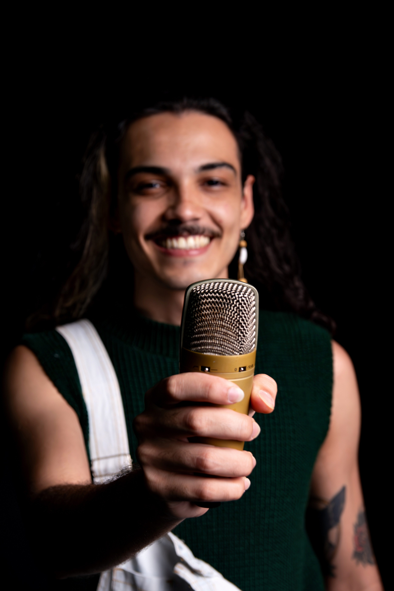

Enzo e João Pelegrini
SURISTÓRIA
Criada em 2019, a Banda Suricatos nasceu do encontro de universitários ansiosos por mostrar a música de qualidade no cenário uberabense.
De lá pra cá, o amadurecimento e a evolução foram naturais, conforme nossa participação em eventos culturais da cidade.
Com os criadores, compositores e musicistas Enzo e João, nasceram músicas autorais repletas de influências culturais como Jazz, Bossa Nova, Forró e, principalmente, o Reggae.
A Banda Suricatos tem ocupado os palcos de Uberaba, sempre levando o amor, a alegria e o regionalismo para todos os públicos.




VÍDEOS
FORMATO BANDA
FORMATO DUO
PASSARINHOS
Assista ao clipe oficial de "Passarinhos". Uma viagem sonora com muita emoção e raiz de reggae.
EQUIPE

JOÃO PELEGRINI
Voz / Violão

ENZO POIANI
Voz / Percussão

JR GODOY
Guitarra

JEFF
Baixo

EDU
Bateria